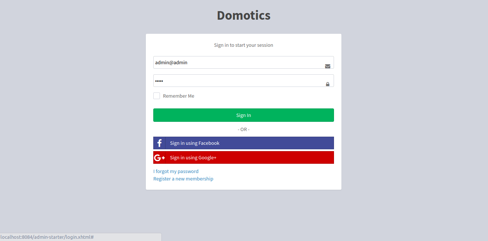
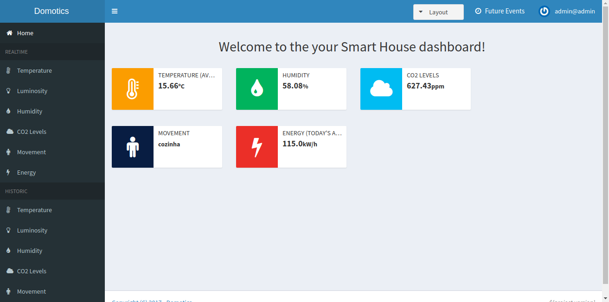
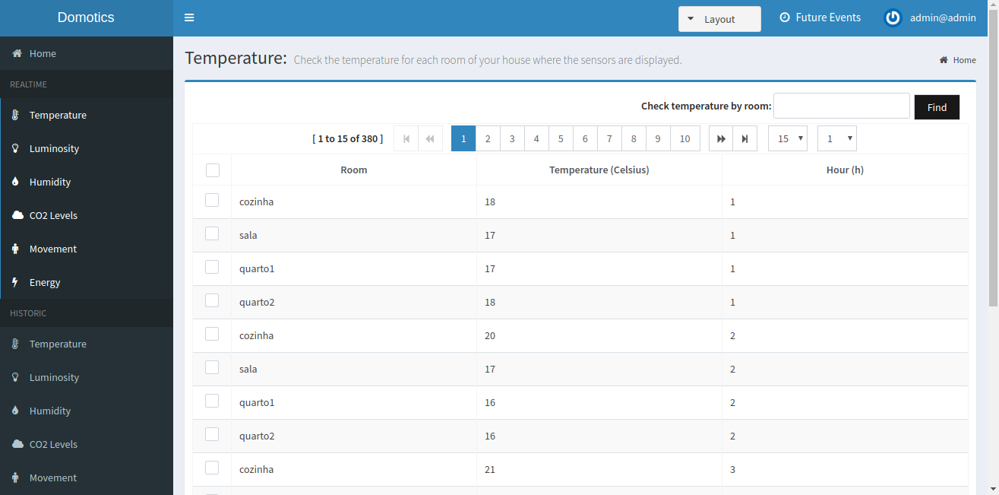
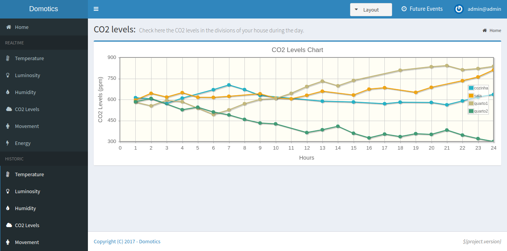
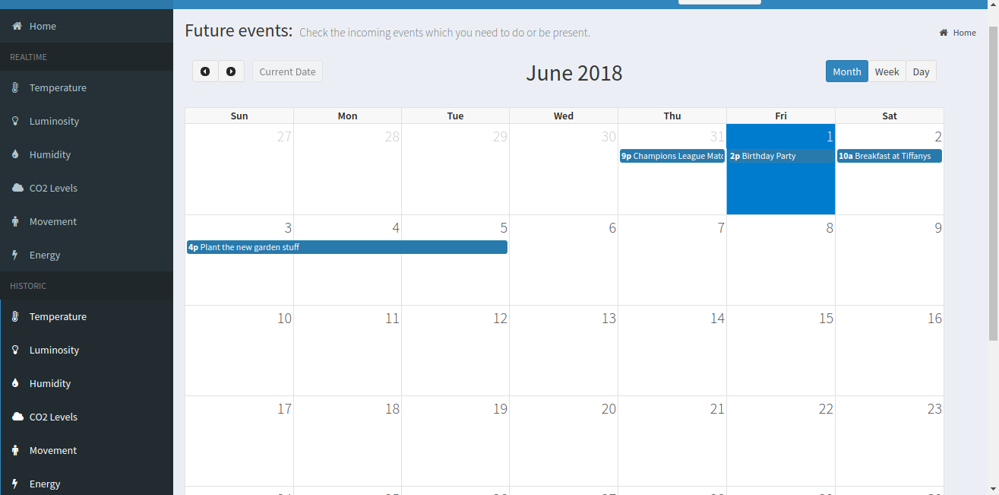

User Manual¶
Deploy of the System¶
Requirements¶
- Database of name domotics with user “postgres” and password “secret”. Also, create the required tables present in the python file by running python3 createTables.py.
- Kafka broker running.
- PostgreSQL database running with port 5432 exposed.
Deployment¶
- Connecting sensors: have sensors sending messages with format “id|value” to kafka broker: <kafkabrokerip>:9092. Messages are sent to topic “SensorsValues”. Actuators send to the same topic but also receive from topic “ConsumerOrders”.
- System deploy:
- Full system with sensors, broker, database, consumer:
- Run
docker-compose up.
- Run
- System with Kafka broker and database PostgreSQL installed:
- Run (with simulators and actuator):
- Edit file docker-compose_vm.yml: change command to, for example: [“./wait-for-it.sh”, “kafka”, “python”, “consumerMain.py”, “<kafkamachine>:9092”] where <kafkamachine> is the hostname of broker or IP address. For sensors: “command: [ “python”, “simMain.py”, “<simtype>“, ”<kafkamachine>:9092”] where <simtype> is the type of value sent (“temperature”, “humidity”, “co2”, “movement”, “energy”).
- Run:
docker-compose -f docker-compose_vm.yml up.
- Run (without simulators): same as above but eliminate the simulators services in the docker-compose_vm.yml file: simen, simco2, simen, simmov, simhum, lightsactuator.
- Usage:
- After deploying, accessing the dashboard:
http://<tomcatservletmachineAddress>:8888/admin-starter/ - Accessing the database:
http://<adminerMachine>:8010and fill the text boxes with: server (<postgresmachine name or ip:port>), user “postgres”, password “secret”, database domotics and type PostgreSql.
- After deploying, accessing the dashboard:
How to use the system?¶
1. The first step in our project is the login page. Here, the user fill the fields with his credentials to have access to his smarthouse’s dashboard.
Figure 3: Login Page
2. If the credentials of the user are correct, we will be redirect to the homepage of the dashboard. Here he can see:
Average temperature registered during the day.
Average humidity registered during the day.
Average CO2 levels registered during the day.
Division where it was registered the most movements during the day.
Average energy consumption registered during the day.
Figure 4: Homepage
3. In the dashboard, the user has access to realtime data. By selecting the parameter the user wants to observe, he or she will be redirect to a page where are displayed, for each house division, the values registered by the sensors in realtime.
Figure 5: Table with values in realtime
4. Oh the other hand, if the user wants to see previous values of the sensors, he can consult the historic. This is an option available on the navigation bar on the left side of the dashboard. By choosing one of the parameters read by the sensors, after the title “Historic”, the user can see previous values presented in a chart.
Figure 6: Chart of CO2 levels
5. The user has also access to a calendar implemented inside the dashboard where he or she can visualize all the events (for every months of the year) planned such as meetings or birthday parties. The user can also add new events.
Figure 7: Calendar